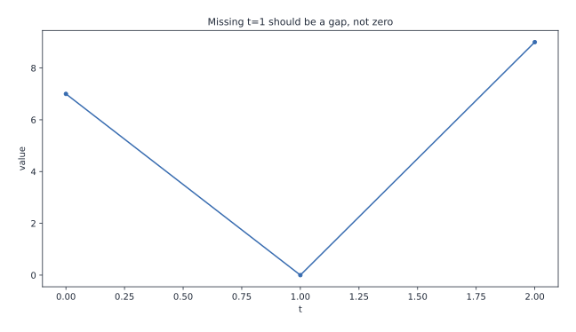

Missing t=1 should be a gap, not zero
line chart. 3 displayed records from 3 input records. Reduction strategy: none.
View chart data (3 records)
| t | value |
|---|---|
| 0 | 7 |
| 1 | None |
| 2 | 9 |

line chart. 3 displayed records from 3 input records. Reduction strategy: none.
| t | value |
|---|---|
| 0 | 7 |
| 1 | None |
| 2 | 9 |